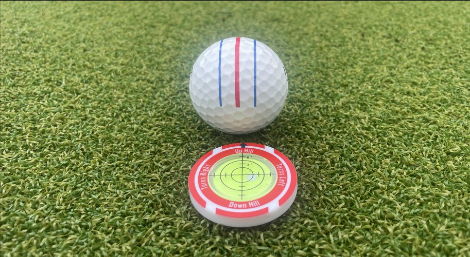
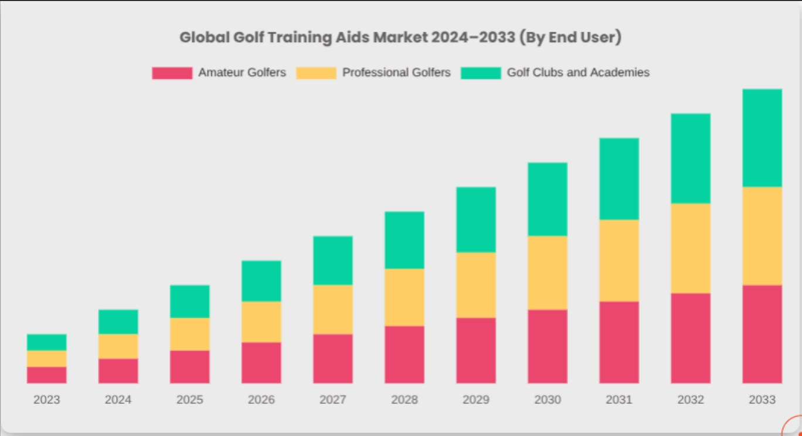
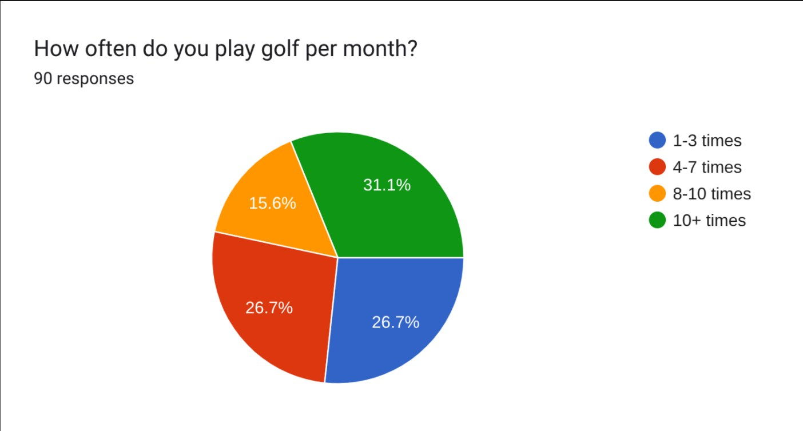
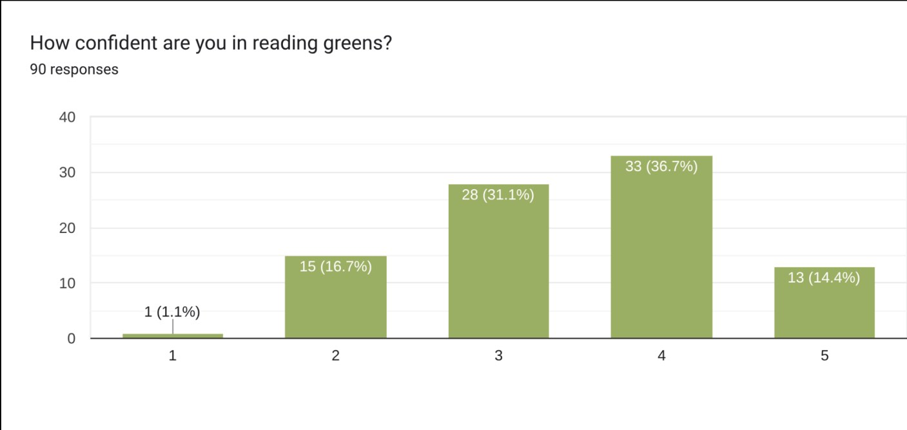
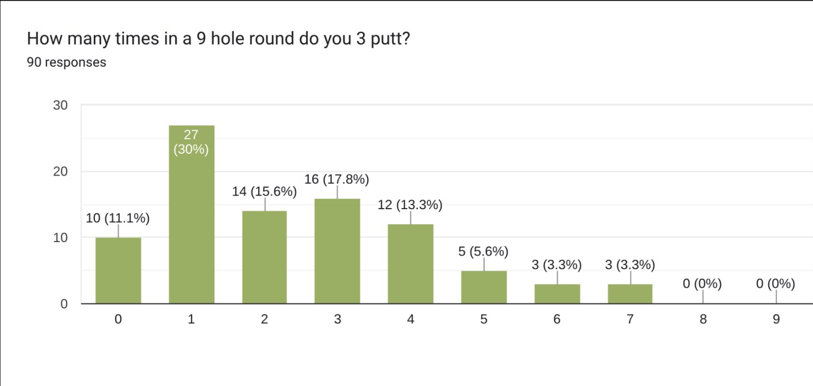
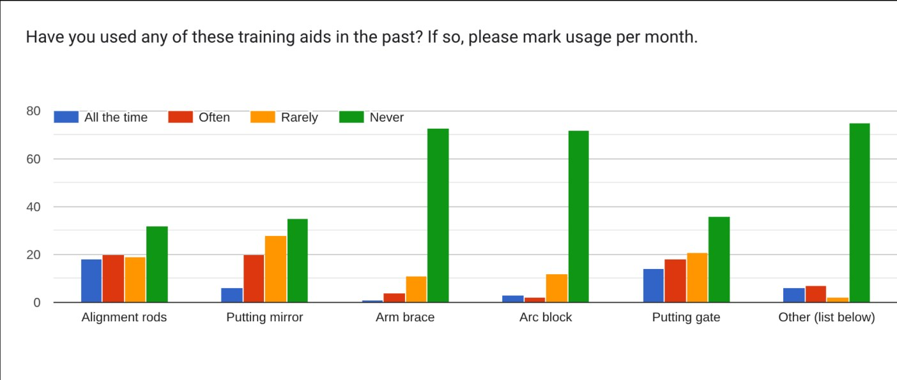
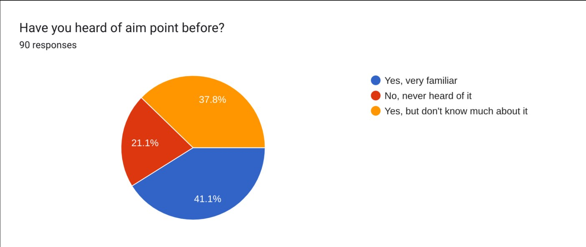
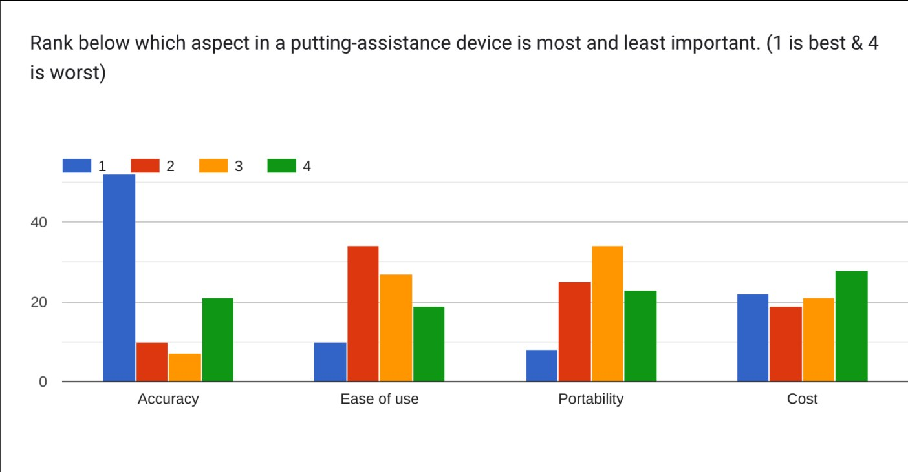
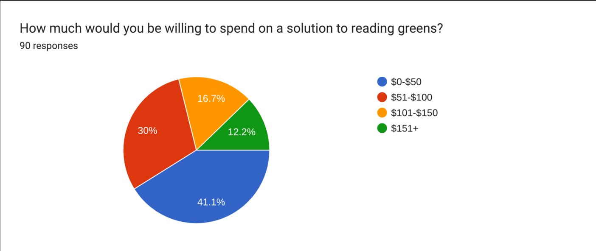

Element A
Presentation and Justification of the Problem
I. Introduction
Problem Statement
In the United States, 44.13% of amateur golfers have 14.9+ handicaps (not including players who don’t keep score) and experience difficulties when reading the slopes of greens.1 These difficulties arise from novice golfers lacking experience with reading breaks and from courses having different types of cuts for the greens. This problem leaves high-handicap golfers unsatisfied with themselves, as they consistently average four to five three-putts per 18 holes and end up shooting high scores. Introducing a way to help golfers better understand green contours can and will significantly improve their rounds.
II. Supporting Research
2.1: Context
Several different variations of slope, putting speeds, and green cuts make it extremely difficult for golfers to judge both the direction and distance of putts.
2.2: Current Putting Drill Aids and Their Concerns
Golfers currently use many golf aids. With there being some better than others, many flaws need to be addressed with these aids.
2.2.1: Putting Mirror/String aid
A putting mirror and string are training aids commonly seen among tour pros. Both tools allow pros to ensure an accurate posture over the ball while also maintaining a smooth and accurate swing path.2
2.2.2: Flaws with a putting Mirror/String aid
While mirrors and strings help maintain a correct setup and help to maintain a consistent swing, they don’t help to develop a good feel on the greens. One of the biggest aspects of putting is ensuring reasonable speed control, which these tools don’t help with.
2.3: Aimpoint
Aimpoint is a putting method that has grown in popularity in the golf world. It is used as a safety net for amateur golfers to provide consistent results in their rounds. With Aimpoint’s recent surge among golfers, it remains a difficult concept to learn. Some golf instructors need to undergo a certification process to ensure they are adequately informed on this topic.3
2.3.1: The Concept of Aimpoint
Aimpoint is broken down into three main steps.4 First, as seen in Figure 1, the golfer straddles the putt line and feels the weight difference between their two feet (this is done halfway between the ball and the hole). Second, the golfer uses this feel in their feet to determine the percent slope in the green.
As shown in Figure 2.1, the professional golfer straddles his putt line to calculate and estimate the slope of the greens.
The golfer must pick the correct percentage of slope, a number ranging from one percent to five percent. Once this percentage is chosen, the golfer moves on to the final step. As seen in Figure 2.1, the golfer then stands behind their ball, closes one eye, lifts their hand so that their pointer finger is just outside the hole. The number of fingers a golfer must hold up is directly related to the amount of slope they feel. See Figure 2.2. The golfer must now aim at the point that their outermost finger is pointing. With a high level of accuracy, the ball will then roll right into the hole.
Figure 2.3: Key to Number of Fingers for the Equivalent Percent Slope
| Slope severity | Description |
|---|---|
| 1% (1 finger) | Gentle slope, barely noticeable. |
| 2% (2 finger) | Moderate slope, easily felt underfoot. |
| 3% (3 finger) | A strong slope requires clear adjustment. |
| 4% (4 finger) | Very steep slope, challenging to compensate. |
| 5% (5 finger) | Extreme slope, rare but possible in unique situations. |
2.3.2: The Credibility of Aimpoint
Aimpoint is considered one of the most reliable methods for reading greens. Many pro golfers have had great success with this method: Collin Morikawa, Viktor Hovland, Keegan Bradley, Adam Scott, and Ludvig Aberg, to name a few.6 Research has concluded Aimpoint to be nearly 99% accurate.7
2.3.3: Linear putters
Aimpoint is used for those who are considered linear putters.8 A linear putter is someone who likes to aim directly at the apex of the putt line rather than aiming along the arc.9 A linear putter aims at an intermediate target, a concept very similar to that of Aimpoint.
2.3.4: Stimp
With the concept of aimpoint comes the necessary idea of Stimp (speed of the green). When it comes to determining the adequate line of a putt, the speed at which a golfer needs to roll the putt is critical.10 The faster a green is, the more break someone would have to play in their putt, requiring a more in-depth calibration of their Aimpoint process.
III. Market Analysis
3.1: Market Competitors and Barriers to Entry
There is a range of products that address green reading, with notable examples including SurePuttLite Golf Reader, SurePuttPro Green Reader, and Progidora SlopeMaster ProGreenReader. All of these products are very basic slope reading disks with a price tag of around 25 dollars. The solution being created would be able to compete with these devices, as, instead of just showing the slope, it would compute the exact aimpoint and maintain a higher accuracy due to more complex technology. Current devices are very limited in precision on actual greens, require manual input, and have a long setup time. Entry into the market will be moderately hard due to the established trust of long-standing cheap green readers and the USGA rule restrictions forcing the green reader to be more of a practice-only tool. The main barrier, however, would be the difficulty of gaining precise slope measurements while maintaining competitiveness with the price of the cheaper low-tech options.

An example of a modern day product that incorporates portability through the use of a level to measure the slope.
3.2: Market Size and Trends
The Global Golf training aids market was evaluated at $1.5 billion as of 2024 and is expected to reach $4.6 billion by 2033.12 The market has a forecasted Compound Annual Growth Rate of 5.7% over the period 2024-2033.12 Lately, there has been a growing emphasis on integrating technology into training aids, primarily through sensors and data analytics. A strong emphasis has been placed on the portability of these training aids, enabling them to be used anywhere, as well as on their sustainability.12

3.3: Users and Buyers
Users
- Amateur Golfers
- Golf Coaches/Instructors
- Indoor golf studio players
Buyers
- Individual golfers
- Parents of Junior Golfers
- Golf coaches
- Golf courses and practice facilities
Users and buyers mostly overlap, but in some cases, the buyer is not the user. These cases include parents, coaches, and practice facilities.
IV. Survey Results
In total (at time of writing this report), there are 90 responses. The rest of the survey section will be based on the responses (male & female golfers) that were collected.

Figure 4.1 shows that the amount of time respondents spend per month is highly varied: 26.7 percent play 1-3 times, while 31.1 percent play 10+ times. It also makes it clear that golfers across all skill levels are impacted by the problem and interested in a solution.

Figure 4.2 was used to assess individual golfers' expertise and to provide insight into the practicality of the solution. The survey results provided that only 14.7 percent of respondents are fully confident in their ability to read greens. This indicates that the problem is widespread within the golfing community and that the solution would be helpful to a large majority of golfers.

As seen in Figure 4.3, 88.9% of golfers who completed the survey 3-putted at least once during a 9-hole round. This indicates that nearly all respondents would benefit from a product that helps read greens, thereby decreasing their average number of 3-putts.

The results of Figure 4.4 show that some training aids are used more frequently than others, providing insight into the effectiveness and popularity of some existing aids over others. The data from Figure 4.4 makes it clear that putting mirrors and alignment rods is used most frequently. Analyzing why this is the case will guide the path to creating the best viable solution to reading greens.

Figure 4.5 clarifies that the majority of respondents, specifically 78.9%, have heard of or are very familiar with AimPoint, suggesting that most golfers are already familiar with green-reading tools. The figure above makes it evident that golfers view green reading as essential and are actively seeking solutions to the problem, reinforcing the notion that creating a device to help with green reading would be accepted and valuable to most golfers.

As shown in Figure 4.6, a high majority of respondents found accuracy to be the most crucial aspect of a putting-assistance device and portability to be the least essential factor. This data makes it clear that when developing a solution, the primary focus should be on creating an accurate, cost-effective solution.

As shown in Figure 4.7, 41.1% of respondents are willing to spend $0-$50, while 30% are willing to pay $51-$100. This indicates that most respondents would prefer the solution to be on the cheaper side ($0 - $100), suggesting it would be good practice to keep the solution’s price relatively low so that a large number of golfers will be interested in the product.
V. Stakeholders
5.1: Golfers
- Amateur golfers who struggle with putting
- High school golfers
- Recreational players
Amateur recreational golfers are the primary target market, as these players would benefit most from a high-tech green reader. The device will improve their ability to putt at close distances and create a better golf experience.
5.2: Golf Courses and Practice Facilities
- Driving ranges that have putting greens
- Country clubs
- Putting studios
Practice facilities are primary stakeholders of the product. If the product is of interest to the club or range, then the facility might purchase or promote it, helping it gain traction amongst golfers.
5.3: Golf Coaches and Instructors
- High School golf coaches
- Putting Coaches
Coaches are required to improve students' skills. Tools that will help students learn to read greens better would be helpful and appealing to all golf coaches.
5.4: Golf Retailers
- Dick Sporting Goods
- PGA Superstore
- Online golf stores
Essential stakeholders, such as stores like these, decide whether to carry and promote the item. The support of major golf retailers is essential in creating a large market for the solution being developed.
5.5: Professional Golf Organizations
- PGA
- USGA
- NCAA
Support from major organizations such as these is essential to the product's success. It is important to abide by the rules and regulations set by these companies to ensure the legality of the product use.
VI. Conclusion
Through the analysis of various statistics such as golfers' performance, existing green reading products, and overall conditions of the golfing industry, it is clear that there currently is not a significant method that can determine the two variables in ball rollout: slope direction and magnitude. This widespread issue amongst golfers in the United States leads to players experiencing relatively high three-putt rates and inconsistent scores. These high percentages were evident across surveys conducted among amateur golfers across America. Specifically, out of 90 different golfers, over 58.8% of respondents three-putt more than one time during a nine-hole round of golf. In addition, the survey results indicated that while some golfers had moderate confidence, very few responses truly had full confidence in their putting, which was clearly shown by the left-skewed graph, not to mention the existing consumer products, which, in recent years, have only been able to offer partial help towards reading green slopes and the magnitude of putts with Stimp values. Overall, a solution that is not only reliable but precise is necessary to address the limitations of modern-day green reading methods. As a result, not only will novice players’ scores improve throughout rounds of golf, but they will also gain the confidence they need to enhance their putting abilities.
-
Cunningham, Kevin. “Here’s How Your Handicap Index Stacks up against Golfers in the United States.” Golf, 9 Sept. 2020, golf.com/news/how-your-handicap-index-compares/. ↩
-
Berhow, Joshua. “Why Do So Many Players Use These Two Things to Practice Their Putting?” Golf, 5 May 2022, golf.com/gear/mirrors-string-pros-practice-putting/. ↩
-
“AimPoint Certified Instructor Program.” Aimpoint Instructor Certification, aimpointgolf.com/certification. Accessed 23 Nov. 2025. ↩
-
Frank, Jean. “The Basics of AimPoint Green Reading, Explained in 30 Seconds.” Golf, 2 Oct. 2020, golf.com/instruction/putting/aimpoint-green-reading-basics-30-seconds/. ↩↩
-
Olizarowicz, Brittany. “Aimpoint Explained | MyGolfSpy.” AimPoint Explained, MyGolfSpy, 21 Nov. 2024, mygolfspy.com/news-opinion/aimpoint-explained/. ↩
-
Cradock, Matt. “Which Professional Golfers Use Aimpoint?” Golf Monthly, 24 Feb. 2025, www.golfmonthly.com/tour/which-professional-golfers-use-aimpoint. ↩
-
Olizarowicz, Brittany. “Aimpoint Explained | MyGolfSpy.” AimPoint Explained, MyGolfSpy, 21 Nov. 2024, mygolfspy.com/news-opinion/aimpoint-explained/. ↩
-
Gollwitzer, Zach. “Aimpoint Express for Beginners.” The DIY Golfer, 21 Sept. 2025, www.thediygolfer.com/blog/aimpoint-express-for-beginners. ↩
-
Gollwitzer, Zach. “Putting Tips: Are You Linear or Non-Linear?” The DIY Golfer, 21 Sept. 2025, www.thediygolfer.com/blog/putting-tips-are-you-linear-or-non-linear. ↩
-
Austin, John. “A Comprehensive Guide to Aimpoint Golf Putting.” Skillest Blog, 31 May 2023, skillest.com/blog/a-comprehensive-guide-to-aimpoint-golf-putting/. ↩
-
Usher, David. “How a Simple $14 Gadget Has Transformed My Short Range Putting.” Golf Monthly, 21 Dec. 2023, www.golfmonthly.com/gear/how-a-simple-dollar14-gadget-has-transformed-my-short-range-putting. ↩
-
Kharrati, Katelin. “Custom Market Insights.” Custom Market Insights, 26 Mar. 2024, www.custommarketinsights.com/press-releases/golf-training-aids-market-size/. ↩↩↩↩